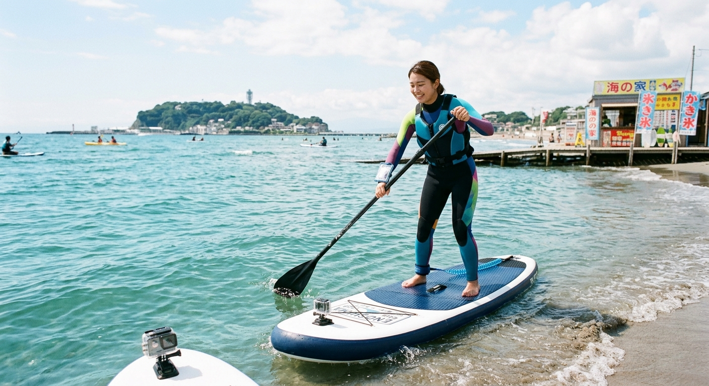

台湾から宮城へ。
海を身近にしたい。

代表の澤地聡一は台湾出身で、2013年から宮城県に在住しています。
SUPサーフィンの台湾代表として国際大会に出場した経験を活かし、2019年に訪日外国人向けのアウトドア体験サービス「野遊YAYU（ヤユ）」をスタートしました。SUPやスノーボード、スキーなど、四季を通じて自然とふれあえる体験を提供しています。
海のアクティビティを通じて、もっと多くの人が水辺に親しみ、安全で安心して海と関われるきっかけをつくりたい。その思いで、お店に立っています。